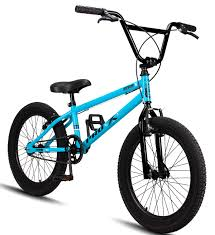
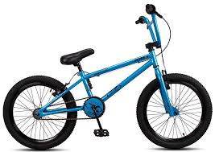
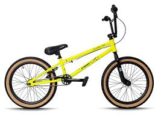
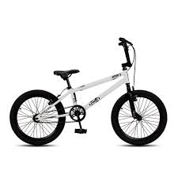
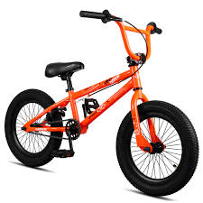
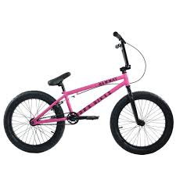

Quanto custa?
| Valores: | |||
|---|---|---|---|
| À vista: | Parcelada: | ||
| Minimo: | Maximo: | Minimo: | Maximo: |
| 600,00 $ | 1.200,00 $ | 12x de 50,00 $ | 12x de 100,00 $ |
A BMX é boa?
A bicicleta BMX é amplamente considerada uma boa escolha, especialmente para quem busca diversão, agilidade e manobras em espaços urbanos ou pistas específicas. Uma das maiores vantagens da BMX é a manobrabilidade: seu quadro compacto e aro menor (geralmente 20") permite movimentos rápidos, saltos, piruetas e outros truques que seriam difíceis em bicicletas maiores. 
Além disso, são bastante resistentes e duráveis, projetadas para suportar impactos fortes de saltos, quedas e terrenos irregulares, exigindo pouca manutenção.
Outro ponto positivo é a variedade de modelos. Existem BMX Freestyle, ideais para manobras em pistas ou ruas; BMX Racing, voltadas para corridas em pistas curtas e técnicas; e Dirt Jump, projetadas para saltos em rampas de terra. Isso permite que cada ciclista escolha uma BMX que se adapte ao seu estilo e nível de habilidade, desde iniciantes até profissionais.
Porém, como qualquer equipamento, a BMX também possui limitações. Por ter geometria rígida e geralmente sem suspensão, ela não oferece muito conforto em longas distâncias ou em terrenos muito acidentados. Além disso, a capacidade de carga de alguns modelos pode ser limitada, geralmente suportando até cerca de 88 kg, o que deve ser considerado por ciclistas mais pesados. Outro ponto é que a maioria das BMX não possui marchas, o que dificulta subidas ou pedaladas em terrenos variados.
Em termos de uso prático, a BMX é ideal para quem quer diversão e prática de manobras, seja em pistas, parques, ruas ou competições específicas. Para longas pedaladas ou trekking em terrenos variados, outras bicicletas, como Mountain Bikes ou modelos urbanos com suspensão, podem ser mais adequadas.
Para iniciantes, modelos como a Pro-X Série 1 Aro 20 são muito recomendados, pois combinam boa qualidade, resistência e preço acessível, permitindo que novos ciclistas aprendam e pratiquem manobras com segurança. Já ciclistas mais avançados podem optar por modelos de BMX com quadro de alumínio ou cromoly, freios mais eficientes e componentes reforçados, que proporcionam maior desempenho e durabilidade.
É usada em que área esportiva?

A bicicleta BMX é muito utilizada na área esportiva de ciclismo de ação, que envolve manobras, saltos, corridas curtas e habilidades técnicas em diferentes tipos de terreno. Ela se destaca por sua versatilidade, resistência e agilidade, permitindo aos ciclistas executar movimentos rápidos e precisos, essenciais em esportes radicais.
As principais modalidades em que a BMX é utilizada são: BMX Freestyle, voltada para manobras e acrobacias em pistas, parques de skate ou áreas urbanas adaptadas, onde os ciclistas realizam saltos, giros e truques sobre obstáculos como rampas, corrimões e escadas; BMX Racing, focada em corridas de velocidade em pistas curtas de terra batida, com obstáculos e curvas fechadas, sendo uma modalidade olímpica desde 2008; e Dirt Jump, especializada em saltos em rampas de terra ou obstáculos naturais, exigindo precisão e controle para pousos seguros.
Além disso, a BMX é bastante usada no street riding, prática urbana em que ciclistas utilizam escadas, corrimões, bancos e rampas da cidade para executar manobras. Dessa forma, a BMX combina resistência, leveza e agilidade, sendo adequada tanto para lazer quanto para competições oficiais e exibições de habilidade em ambientes urbanos, pistas e parques.
Onde foi Fabricada ?
As bicicletas BMX fabricadas no Brasil são reconhecidas por sua qualidade, resistência e excelente custo-benefício, tornando-se uma escolha confiável tanto para iniciantes quanto para ciclistas mais experientes que buscam praticar manobras, saltos e freestyle urbano. O mercado brasileiro conta com diversas marcas que se destacam nesse segmento, oferecendo modelos adaptados a diferentes faixas etárias e estilos de prática.

Entre as principais marcas brasileiras de BMX, temos a Anfinity Bikes, que disponibiliza modelos como o Super Jumper 1 e o 80’s Edition, fabricados em alumínio, leves e resistentes, ideais para crianças e adolescentes. Esses modelos possuem design moderno e componentes pensados para oferecer segurança e durabilidade, permitindo que jovens ciclistas realizem manobras e praticas de freestyle com confiança.
Outra marca de destaque é a Pro-X Bikes, que produz modelos como a Série 5 e a Série 16k, construídos com quadros de aço de alta resistência, garfos rígidos e freios V-brake. Esses componentes proporcionam maior controle e estabilidade, sendo ideais para uso urbano e para ciclistas que desejam desenvolver habilidades em manobras e saltos. A Pro-X é reconhecida por oferecer bicicletas duráveis, resistentes e com manutenção relativamente simples, garantindo bom desempenho por mais tempo.
A DNZ é outra marca nacional importante, oferecendo modelos como a Bicicleta Aro 20 Cross BMX Cromada, que combina quadro em alumínio, aro aero e componentes de qualidade, como correntes reforçadas e freios V-brake. Esses modelos são indicados para quem busca BMX com alto desempenho em diferentes tipos de terreno, seja em parques, pistas ou ruas.
Todas essas bicicletas estão disponíveis em lojas físicas e online no Brasil, proporcionando facilidade na compra, manutenção e reposição de peças. Além disso, os modelos nacionais permitem aos ciclistas investir em bicicletas de qualidade sem gastar valores exorbitantes, tornando o BMX mais acessível.
No geral, as BMX brasileiras se destacam por oferecer resistência, durabilidade, segurança e design atrativo, sendo perfeitas para a prática de freestyle, street riding, manobras urbanas ou simplesmente para diversão e transporte urbano. Elas atendem a diferentes perfis de ciclistas, desde crianças e adolescentes até adultos que buscam aprimorar suas habilidades no BMX, garantindo experiência positiva e duradoura para quem escolhe pedalar nesse estilo de bicicleta.
Lançada em que ano?
 A bicicleta BMX Radikal foi lançada no Brasil em 2016. Desde então, ela se tornou uma das opções mais procuradas por ciclistas brasileiros que buscam uma bicicleta resistente, durável e com bom custo-benefício, especialmente voltada para a prática de manobras, freestyle e uso urbano intenso.
Produzida no Brasil com foco nas necessidades do mercado nacional, a BMX Radikal possui componentes, como quadro, garfo, rodas e freios, escolhidos para oferecer segurança, estabilidade e performance, suportando impactos e movimentos comuns em manobras de BMX.
A fabricação nacional também permite assistência técnica acessível e reposição de peças de forma rápida, além de preços competitivos em comparação com modelos importados. Seu design é moderno e atraente, pensado tanto para jovens quanto para adultos que desejam iniciar ou aprimorar suas habilidades no BMX.
Desde seu lançamento, a BMX Radikal conquistou espaço no mercado brasileiro por combinar resistência, durabilidade e estilo, sendo ideal para quem quer praticar manobras em pistas, ruas ou parques, sem abrir mão de qualidade e segurança. É uma bicicleta que atende tanto iniciantes quanto ciclistas mais experientes, oferecendo uma experiência completa de freestyle e BMX urbano.
Quantas marchas tem?
A bicicleta BMX Radikal possui uma única marcha, ou seja, não conta com câmbio. Essa característica é típica de modelos de BMX voltados para manobras, freestyle e uso urbano, pois oferece simplicidade mecânica e maior resistência em comparação a bicicletas com múltiplas marchas.  A ausência de câmbio reduz significativamente a chance de falhas mecânicas durante saltos, manobras ou trajetos mais intensos, tornando a bicicleta mais confiável e durável.
Além disso, o design de uma única marcha torna a manutenção muito mais simples, pois não há engrenagens ou cabos complexos que precisem de ajustes frequentes. Isso é especialmente vantajoso para quem utiliza a BMX em pistas, parques, ruas ou sessões de treino, garantindo que a bicicleta permaneça em ótimo estado por mais tempo.
Outro ponto positivo dessa configuração é que ela permite ao ciclista concentrar-se nas manobras e na performance, sem se preocupar com trocas de marchas durante o pedal. Esse fator torna a BMX Radikal uma excelente escolha tanto para iniciantes que estão começando a aprender as técnicas do BMX, quanto para ciclistas mais experientes que desejam uma bicicleta resistente, prática e eficiente para freestyle urbano e acrobacias.
Portanto, a BMX Radikal, com sua única marcha, combina durabilidade, praticidade, segurança e facilidade de manutenção, atendendo perfeitamente às necessidades de quem busca uma bicicleta de alto desempenho para o BMX.
Qual o tamanho da direção?
A BMX Radikal utiliza uma caixa de direção integrada de 1 polegada (1"), também conhecida como caixa de direção press-fit. Esse tipo de direção é comum em bicicletas BMX, pois oferece resistência, simplicidade mecânica e durabilidade, características essenciais para manobras, saltos e uso urbano intenso.
A caixa de direção integrada de 1" é projetada para acomodar um tubo de direção com diâmetro externo de 25,4 mm. Ela utiliza rolamentos selados, pressionados diretamente na estrutura do quadro, eliminando a necessidade de roscas externas. Essa configuração proporciona uma montagem mais limpa e robusta, além de facilitar a manutenção, já que os rolamentos selados têm maior durabilidade e resistência à sujeira e à umidade.
Para substituir ou atualizar a direção da BMX Radikal, é importante garantir que os componentes, como garfos e mesas, sejam compatíveis com a caixa de direção integrada de 1". Também é recomendável verificar periodicamente o estado dos rolamentos e substituí-los se houver desgaste, garantindo segurança, desempenho e conforto na pilotagem.
Quantos dentes na catraca?
A BMX Radikal, voltada para manobras e uso urbano, geralmente é equipada com uma catraca de 14 dentes, uma configuração típica em bicicletas BMX. Essa quantidade de dentes proporciona uma relação de transmissão equilibrada, que combina agilidade, controle e facilidade para realizar manobras, como saltos, giros e tricks em pistas ou ambientes urbanos. Com 14 dentes na catraca, o ciclista consegue acelerar rapidamente e manter boa estabilidade, características essenciais para o freestyle e para o BMX street.
A escolha da catraca com 14 dentes também tem impacto direto na durabilidade e manutenção da bicicleta. Catracas com esse número de dentes tendem a suportar melhor a força aplicada durante saltos e manobras, reduzindo o desgaste prematuro da corrente e do cubo traseiro. Além disso, a simplicidade desse sistema facilita a manutenção, pois há menos tensão e complexidade mecânica do que em bicicletas com múltiplas marchas ou catracas maiores.
Para quem deseja substituir ou atualizar a catraca da BMX Radikal, é fundamental verificar a compatibilidade com o cubo da roda, já que a maioria das BMXs utiliza cubos de rosca padrão. Ao escolher uma nova catraca, é importante considerar o número de dentes que melhor se adapta ao seu estilo de pilotagem e às suas necessidades. Por exemplo, ciclistas que preferem manobras rápidas e ágeis podem manter 14 dentes, enquanto aqueles que buscam maior velocidade em retas podem optar por catracas com um número diferente de dentes, desde que compatível com o cubo.
Em resumo, a BMX Radikal com 14 dentes na catraca oferece um equilíbrio ideal entre desempenho, resistência e controle, tornando-a uma excelente opção para ciclistas que praticam BMX freestyle, street ou apenas desejam uma bicicleta resistente e confiável para uso urbano e recreativo.
Variedades de cores?
Preto, Preto , Cinza, Vermelho, Amarelo, Rosa, Azul, Laranja, Branco, Verde, Azul escuro, Roxo, Verde água, Marrom, Perolado com azul, Roxo escuro com prata, Vermelho fogo com preto, Cinza claro, Preto mate com azul neon, Dourado com preto, Prata com vermelho, Verde bandeira com amarelo, Azul marinho com laranja, Bege com marrom, Vermelho cereja com cinza, Cinza escuro com amarelo neon, Preto com azul royal, Rosa choque com preto, Azul turquesa com branco, Vermelho tomate com preto, Laranja neon com cinza, Verde menta com branco, Marrom claro com bege, Preto com laranja fluorescente, Azul safira com prata.
Quantidade de Quilos?
| Pesos (kg): | |||||||||
|---|---|---|---|---|---|---|---|---|---|
| aro: | peso suportado: | peso do produto: | prazo de garantia: | selim: | |||||
| 20: | 90 kg | 11,5 kg | 90 dias | BMX | |||||
Fontes bibliograficas: Uso de IA/Chatgbt.